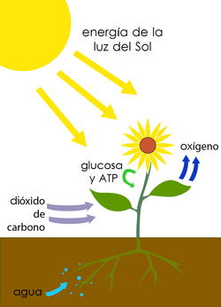
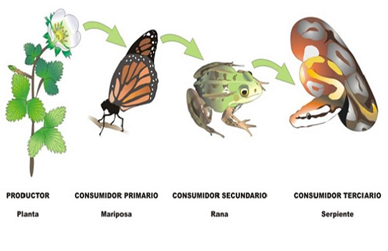
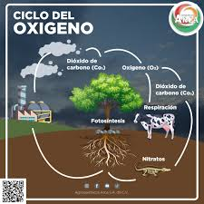
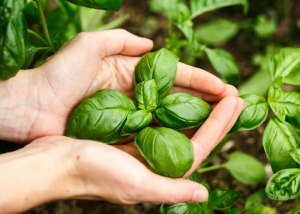
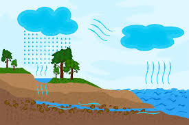

Aquí es donde conectamos la microscópica célula con todo el planeta. Las funciones de estas células determinan el equilibrio ecológico a través de tres pilares:.
Gracias a los cloroplastos, las células vegetales son autótrofas, lo que significa que fabrican su propio alimento. Al transformar la energía del sol en energía química (carbohidratos/azúcares), las plantas se convierten en el primer eslabón de la cadena alimenticia. Sin esta producción primaria, los animales herbívoros no tendrían qué comer, y por consecuencia, tampoco los carnívoros.


El proceso de la fotosíntesis sigue una fórmula fundamental para la vida:
Las células vegetales absorben el dióxido de carbono del ambiente (un gas de efecto invernadero) y, como desecho de la fotosíntesis, liberan oxígeno (O₂). Básicamente, actúan como los pulmones del planeta, limpiando la atmósfera y permitiendo la respiración de los seres aeróbicos.


A través de las células de las hojas, las plantas realizan la evapotranspiración. Liberan vapor de agua a la atmósfera, lo que contribuye a la formación de nubes y estimula las lluvias, regulando la temperatura local y manteniendo la humedad que otros organismos necesitan para sobrevivir.
